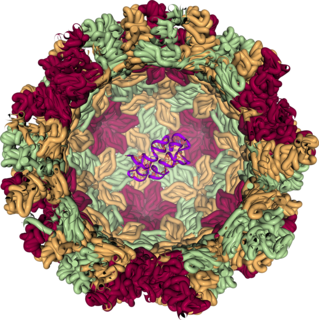
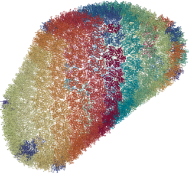
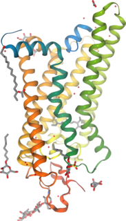
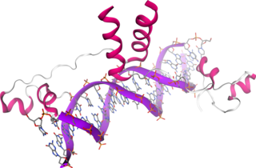
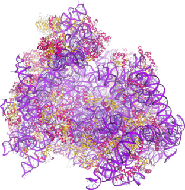
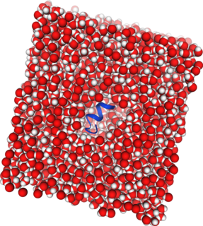
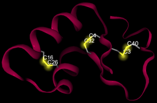
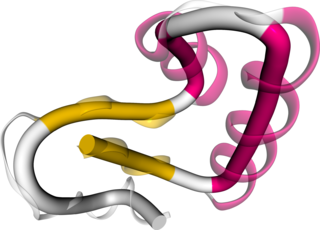

|
|
 |
| Ferredoxin structure (PDB entry 1BLU) depicted by the secondary structure (cartoon representations) and highlighting the two [4Fe-4S] clusters (HyperBall representation) | Structure of the Noro virus capsid (PDB entry 1IHM) that forms the outer shell of the virus. The front of the capsid is clipped away and inside the virus capsid is, for size comparision, the structure of a conserved retroviral RNA packaging element from the Moloney murine leukemia virus (PDB entry 2LIF). |
|  |  |
| HIV-1 capsid structure (PDB entry 3J3Y) showing the backbone colored by chain name. | Structure of light-activated rhodopsin in complex with a peptide derived from the C-terminus of transducin (PDB entry 3PQR). |
|  |  |
| Structure of a DNA/protein complex (PDB entry 1D66). | Structure of a mammalian 80S ribosome (PDB entry 4UJD). |
|  |  |
| System of a peptide derived from the C-terminus of transducin (blue cartoon) surrounded by a box of water molecules (spacefill representation) in preparation for a molecular dynamics simulation. | Structure of crambin (PDB entry 1CRN) highlighting the three disulfide bridges labeled by residue number. |
|  | |
| Example usage of the rope representation (solid tube) to display the protein fold more abstract than with the cartoon representation (translucent). Shown is the structure of crambin (PDB entry 1CRN) colored by secondary structure with magenta alpha-helices and yellow beta-strands. |